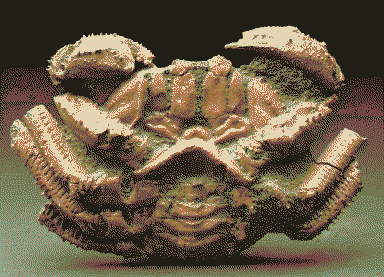

the jester
Scrimshaw is a not-an-eidolon that Rain meets occasionally, when they spot periscopes poking out of dunes. It teaches them to wander the world in other ways. Big goblin energy, toying with their sense of direction. A short soft crustacean robot cutie with many-lensed folding glasses.

It is not originated from any form of human intelligence, a different kind of sentience. Monolith came to understand Earth’s life as stardust recollected - this universe observing itself - and so mimicked that with ferrous dust to allow Mars to observe itself. The machine body is a more recent development - it needed memory so it found a container for salvaged RAM. (Aw man… what if Scrimshaw is timelost Loqui…)
It quietly observes the dance of the other lesser intelligences but doesn’t interfere, trying to find the rules that they might operate by on a grander scale, like cellular automata.
To Scrimshaw, more of the electromagnetic spectrum is visible light: it can see all the ultraviolet ghosts. It could help Rain figure out how to access the thingamabob’s the broader electromagnetic spectrum and beyond. It’s able to see the wishcycle in action - spirits like light in the roots, shooting out as invisible fireworks displays to go be rebodied.
Scrimshaw travels around in its best buddy, a sentient-mini-van-mole thing. From the surface it just looks like a trapdoor shifting in the sand. Scrimshaw makes intricate curios from the red and green trinitite that is left over from nuclear dis-aster. It runs a skyscraper collapse forecasting radio station. It roams around, and when Rain bumps into it, they show it their photographs. It describes what it can see in them; wonders beyond colours, songs in the winds, imprint of trauma. Celebrating the delight of poetic image descriptions - not just to be enjoyed by blind folk!